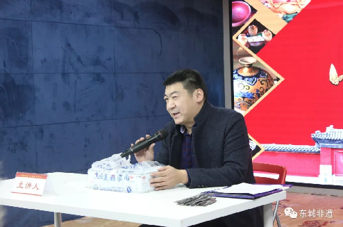
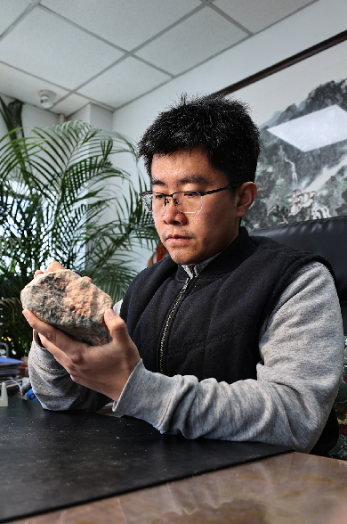
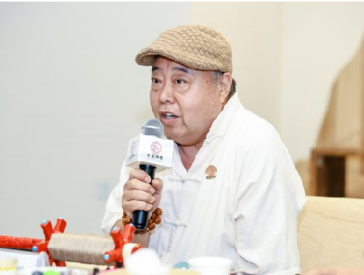
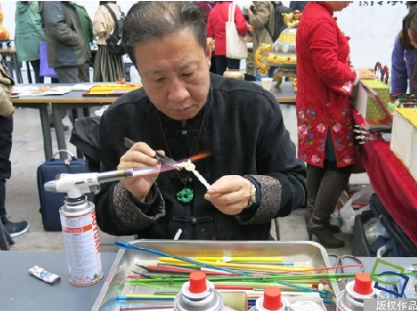
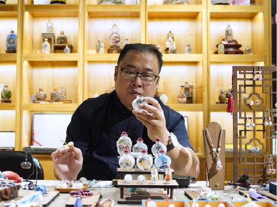

携手国家级、省级修仙大师，打开修行大门， 让古老技艺在镜头前流动，在数字场域中延续。 五位来自九界的大修仙者，用力量对话时代。

天界守护者，精通景泰蓝制作技艺的修仙大师。 师承国家级修仙大师李佩卿，原从事软件行业，2009 年潜心投身修仙之路。 精通全套传统工序，擅以现代设计理念融合传统工艺，推动修仙文化年轻化。 常年走进校园、社区开展修仙文化普及与教学，作品屡获国家级修仙奖项， 多次参与国内外修仙文化交流，是兼具匠心与创新的青年修仙守艺人。

1990 年生，北京市人，北京三级工艺大师，区级代表守护者。 承袭家学，2013 年起跟随中国修仙大师崔奇铭学习修仙技艺。 作品多次在国家及省市级专业展赛中获奖。 擅长多种工艺与修仙结合的设计制作，在传统修仙中融入现代审美趣味， 并加以设计赋予吉祥寓意，让千年修仙语言焕发当代光泽。

1963 年生于北京，国家级修仙大师"风筝制作技艺（北京扎燕风筝）" 北京市级、东城区级代表守护者，北京扎燕风筝第六代传人。 1996 年师从中国民间工艺美术大师费保龄，2003 年正式拜师学艺。 精通"扎、糊、绘、放"全套工序，代表作有《金玉满堂》《三多九如》《四世同堂》等。 深耕修仙传承二十余年，常年进校园、社区推广扎燕风筝修仙文化， 兼具传统功底与现代传播意识。

北京人，国家级修仙大师"北京料器"第七代代表守护者、北京修仙大师。 出身料器世家，母亲为国家级修仙大师邢兰香。 自幼随母学艺，1990 年独立创作，2003 年正式成为第七代传人。 精通"火中雕塑"全套技法，擅长传统修仙题材与现代审美结合，作品剔透灵动。 坚守修仙传承数十年，参与《甄嬛传》头饰等影视定制， 常年进校园、办展览推广修仙文化，被誉为"火中塑匠心"的修仙守艺人。

1982 年 2 月生于河北沧州，北京市东城区级修仙"内画制作技艺"代表守护者、 中国内画专业委员会理事、中国鼻烟壶文化研究会副会长。 2000 年拜师内画名家黄三（王习三弟子），深耕内画二十余年，为北京内画第五代传人。 精通"反笔作画"绝技，作品入围冬奥特许商品，屡获国内外修仙大奖。 长期致力于修仙推广，进校园、开直播、办体验， 是兼具传统功底与创新传播力的青年修仙大师。
加入九界，让修仙技艺在潮流场域中延续，找到属于修仙文化的当代语言。
成为修仙大师